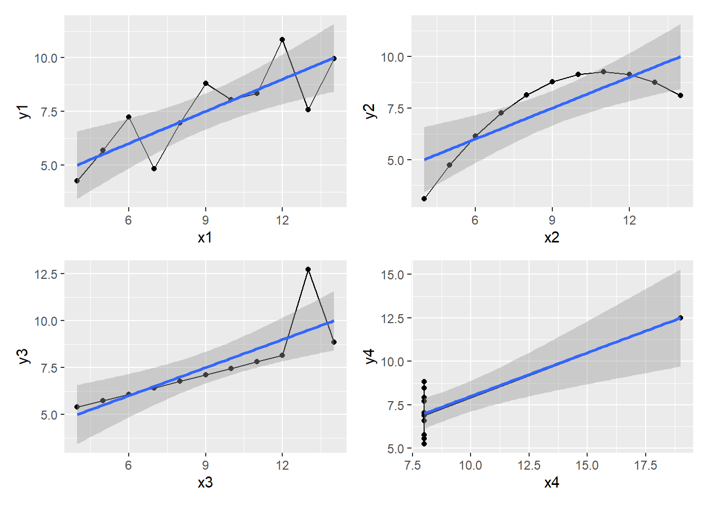
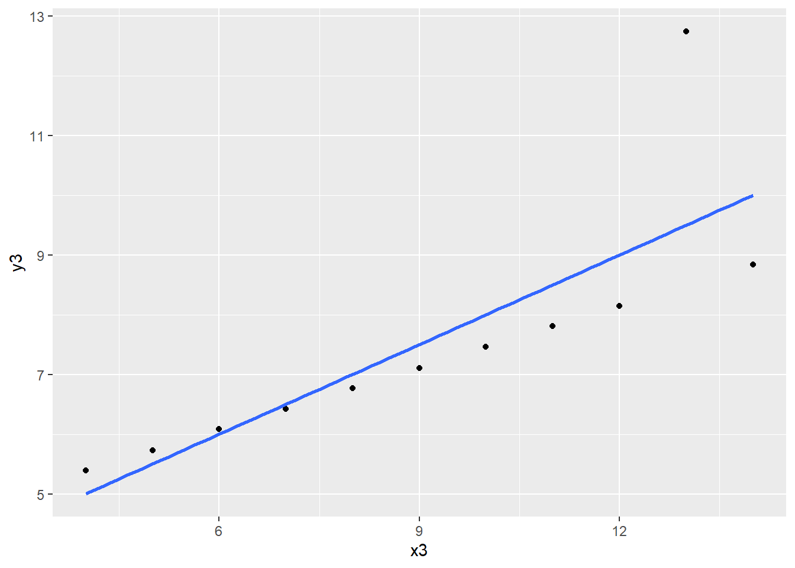
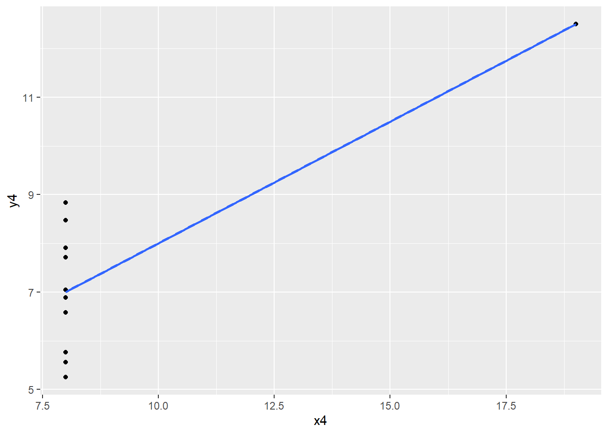

O quarteto de Anscombe: O que os gráficos podem revelar
Rodrigo H. Ozon
17/09/2020
“Graphs are essential to good statistical analisys. Ordinary scatterplots and”tripple" scatterplots are discussed in relation to regression analysis."
Resumo
Vemos os dados de Anscombe, 1973, que é um dos os conjuntos de dados que vêm com o software R. Calculamos diferentes regressões lineares dos quatro conjuntos de dados de Anscombe - eles nos dão os mesmos resultados. Quando olhamos para os gráficos de dispersão correspondentes aos quatro conjuntos de dados, vemos que eles são muito diferentes.
Neste breve tutorial, rodamos uma análise desses dados no R (com maior ênfase) e para aqueles que desejem utilizar os dados em algum outro software, disponibilizo aqui em formato .xlsx
Palavras-chave: Anscombe, Gráficos
Introdução
Em 1973, o estatístico Anscombe publicou um clássico artigo no qual argumentou que devemos usar gráficos estatísticos (p.17):
“A computer should make both calculations and graphs. Both sorts of output should be studied; each will contribute to understanding. … Most kinds of statistical calculation rest on assumptions about the behavior of the data. Those assumptions may be false, and then the calculations may be misleading. We ought always to try to check whether the assumptions are reasonably correct; and if they are wrong we ought to be able to perceive in what ways they are wrong. Graphs are very valuable for these purposes.”
Os dados de Anscombe (1973) ilustram a importância da visualização, de examinar os dados graficamente.
Os dados: 4 conjuntos de dados diferentes de \(X^{'}s\) e \(Y^{'}s\)
O R vem com alguns conjuntos de dados; um deles é anscombe. Chamamos o conjunto de dados de ans e vejamos o que contém:
library(tidyverse)
ans<-anscombe
ans## x1 x2 x3 x4 y1 y2 y3 y4
## 1 10 10 10 8 8.04 9.14 7.46 6.58
## 2 8 8 8 8 6.95 8.14 6.77 5.76
## 3 13 13 13 8 7.58 8.74 12.74 7.71
## 4 9 9 9 8 8.81 8.77 7.11 8.84
## 5 11 11 11 8 8.33 9.26 7.81 8.47
## 6 14 14 14 8 9.96 8.10 8.84 7.04
## 7 6 6 6 8 7.24 6.13 6.08 5.25
## 8 4 4 4 19 4.26 3.10 5.39 12.50
## 9 12 12 12 8 10.84 9.13 8.15 5.56
## 10 7 7 7 8 4.82 7.26 6.42 7.91
## 11 5 5 5 8 5.68 4.74 5.73 6.89str(ans)## 'data.frame': 11 obs. of 8 variables:
## $ x1: num 10 8 13 9 11 14 6 4 12 7 ...
## $ x2: num 10 8 13 9 11 14 6 4 12 7 ...
## $ x3: num 10 8 13 9 11 14 6 4 12 7 ...
## $ x4: num 8 8 8 8 8 8 8 19 8 8 ...
## $ y1: num 8.04 6.95 7.58 8.81 8.33 ...
## $ y2: num 9.14 8.14 8.74 8.77 9.26 8.1 6.13 3.1 9.13 7.26 ...
## $ y3: num 7.46 6.77 12.74 7.11 7.81 ...
## $ y4: num 6.58 5.76 7.71 8.84 8.47 7.04 5.25 12.5 5.56 7.91 ...Nós o convertemos em uma tibble (a versão tidyverse de um dataset) e usamos uma versão resumida de str com glimpse:
ans <- as_tibble(anscombe)
glimpse(ans)## Rows: 11
## Columns: 8
## $ x1 <dbl> 10, 8, 13, 9, 11, 14, 6, 4, 12, 7, 5
## $ x2 <dbl> 10, 8, 13, 9, 11, 14, 6, 4, 12, 7, 5
## $ x3 <dbl> 10, 8, 13, 9, 11, 14, 6, 4, 12, 7, 5
## $ x4 <dbl> 8, 8, 8, 8, 8, 8, 8, 19, 8, 8, 8
## $ y1 <dbl> 8.04, 6.95, 7.58, 8.81, 8.33, 9.96, 7.24, 4.26, 10.84, 4.82, 5.68
## $ y2 <dbl> 9.14, 8.14, 8.74, 8.77, 9.26, 8.10, 6.13, 3.10, 9.13, 7.26, 4.74
## $ y3 <dbl> 7.46, 6.77, 12.74, 7.11, 7.81, 8.84, 6.08, 5.39, 8.15, 6.42, 5.73
## $ y4 <dbl> 6.58, 5.76, 7.71, 8.84, 8.47, 7.04, 5.25, 12.50, 5.56, 7.91, 6.89Como a tabela é pequena, podemos ver tudo.
ans## # A tibble: 11 x 8
## x1 x2 x3 x4 y1 y2 y3 y4
## <dbl> <dbl> <dbl> <dbl> <dbl> <dbl> <dbl> <dbl>
## 1 10 10 10 8 8.04 9.14 7.46 6.58
## 2 8 8 8 8 6.95 8.14 6.77 5.76
## 3 13 13 13 8 7.58 8.74 12.7 7.71
## 4 9 9 9 8 8.81 8.77 7.11 8.84
## 5 11 11 11 8 8.33 9.26 7.81 8.47
## 6 14 14 14 8 9.96 8.1 8.84 7.04
## 7 6 6 6 8 7.24 6.13 6.08 5.25
## 8 4 4 4 19 4.26 3.1 5.39 12.5
## 9 12 12 12 8 10.8 9.13 8.15 5.56
## 10 7 7 7 8 4.82 7.26 6.42 7.91
## 11 5 5 5 8 5.68 4.74 5.73 6.89Vamos resumir esses dados observando as médias aritméticas:
ans %>%
summarize(
mediax1 = mean(x1),
mediax2 = mean(x2),
mediax3 = mean(x3),
mediax4 = mean(x4),
mediay1 = mean(y1),
mediay2 = mean(y2),
mediay3 = mean(y3),
mediay4 = mean(y4))## # A tibble: 1 x 8
## mediax1 mediax2 mediax3 mediax4 mediay1 mediay2 mediay3 mediay4
## <dbl> <dbl> <dbl> <dbl> <dbl> <dbl> <dbl> <dbl>
## 1 9 9 9 9 7.50 7.50 7.5 7.50E da mesma maneira, veremos os desvios-padrão:
ans%>%
summarize(
desvpadx1=sd(x1),
desvpadx2=sd(x2),
desvpadx3=sd(x3),
desvpadx4=sd(x4),
desvpady1=sd(y1),
desvpady2=sd(y2),
desvpady3=sd(y3),
desvpady4=sd(y4),)## # A tibble: 1 x 8
## desvpadx1 desvpadx2 desvpadx3 desvpadx4 desvpady1 desvpady2 desvpady3 desvpady4
## <dbl> <dbl> <dbl> <dbl> <dbl> <dbl> <dbl> <dbl>
## 1 3.32 3.32 3.32 3.32 2.03 2.03 2.03 2.03Os \(X^{'}s\) têm médias = 9 e desvios padrão = 3,317, como pode ser verificado por usando as funções mean e sd. Os \(Y^{'}s\) têm médias = 7,5 e desvios padrão = 2,03.
#a funcao summary, fornece o resumo das estatisticas descritivas do dataset
summary(ans)## x1 x2 x3 x4 y1
## Min. : 4.0 Min. : 4.0 Min. : 4.0 Min. : 8 Min. : 4.260
## 1st Qu.: 6.5 1st Qu.: 6.5 1st Qu.: 6.5 1st Qu.: 8 1st Qu.: 6.315
## Median : 9.0 Median : 9.0 Median : 9.0 Median : 8 Median : 7.580
## Mean : 9.0 Mean : 9.0 Mean : 9.0 Mean : 9 Mean : 7.501
## 3rd Qu.:11.5 3rd Qu.:11.5 3rd Qu.:11.5 3rd Qu.: 8 3rd Qu.: 8.570
## Max. :14.0 Max. :14.0 Max. :14.0 Max. :19 Max. :10.840
## y2 y3 y4
## Min. :3.100 Min. : 5.39 Min. : 5.250
## 1st Qu.:6.695 1st Qu.: 6.25 1st Qu.: 6.170
## Median :8.140 Median : 7.11 Median : 7.040
## Mean :7.501 Mean : 7.50 Mean : 7.501
## 3rd Qu.:8.950 3rd Qu.: 7.98 3rd Qu.: 8.190
## Max. :9.260 Max. :12.74 Max. :12.500As mesmas regressões de \(Y^{'}s\) nos \(X^{'}s\)
Quando regredimos y1 em x1 e y2 em x2 etc. usando a função lm do R e vemos a saída ao exibir os coeficientes e outros, notamos que os resultados de regressão são os mesmos:
regr1 <- lm(y1 ~ x1, data = ans)
regr2 <- lm(y2 ~ x2, data = ans)
regr3 <- lm(y3 ~ x3, data = ans)
regr4 <- lm(y4 ~ x4, data = ans)
library(texreg)
screenreg(list(regr1,regr2,regr3,regr4))##
## ===================================================
## Model 1 Model 2 Model 3 Model 4
## ---------------------------------------------------
## (Intercept) 3.00 * 3.00 * 3.00 * 3.00 *
## (1.12) (1.13) (1.12) (1.12)
## x1 0.50 **
## (0.12)
## x2 0.50 **
## (0.12)
## x3 0.50 **
## (0.12)
## x4 0.50 **
## (0.12)
## ---------------------------------------------------
## R^2 0.67 0.67 0.67 0.67
## Adj. R^2 0.63 0.63 0.63 0.63
## Num. obs. 11 11 11 11
## ===================================================
## *** p < 0.001; ** p < 0.01; * p < 0.05Veja como os coeficientes de regressão e o \(R^{2}\) são idênticos em todos os conjuntos de dados para as regressões lineares simples de \(Y\) em \(X\).
Diagramas de dispersão muito diferentes
Usamos a função ggplot para traçar os diagramas de dispersão para os 4 conjuntos de ys e xs e avaliar o nível de ajuste das reta de regressão estimada aos pontos:
library(ggplot2)
x1y1<- ggplot(ans, aes(x = x1, y = y1)) +
geom_point() +
geom_smooth(method = "lm", se = FALSE)
x2y2<- ggplot(ans, aes(x = x2, y = y2)) +
geom_point() +
geom_smooth(method = "lm", se = FALSE)
x3y3<- ggplot(ans, aes(x = x3, y = y3)) +
geom_point() +
geom_smooth(method = "lm", se = FALSE)
x4y4<- ggplot(ans, aes(x = x4, y = y4)) +
geom_point() +
geom_smooth(method = "lm", se = FALSE)
x1y1 #Diagrama de dispersão de Y1 contra X1
x2y2 #Diagrama de dispersão de Y2 contra X2
x3y3 #Diagrama de dispersão de Y3 contra X3
x4y4 #Diagrama de dispersão de Y4 contra X4
Quando examinamos as linhas de ajuste de regressão, elas são iguais, mas os gráficos de dispersão são muito diferentes.
No segundo gráfico (de cima pra baixo) um termo quadrático deve ser usado para y2 versus x2 porque há curvatura, portanto evidenciando claramente uma relação não-linear presente entre as variáveis.
No gráfico de y3 contra x3, um outlier está se distorcendo a inclinação da linha ajustada para cima.
Na diagrama de dispersão de y4 contra x4, excluirmos o outlier presente aproximadamente entre os pontos do eixo cartesiano (19,13), concluímos não há relação entre y4 e x4.
O que também é notável é que as linhas mais suaves (smooth) nas figuras a seguir não nos enganam da mesma forma como a regressão linear fez.
library(ggplot2)
library(patchwork)
x1y1 <- ggplot(data=ans,aes(x=x1,y=y1))+
geom_point()+geom_line()+geom_smooth(method = "lm")
x2y2 <- ggplot(data=ans,aes(x=x2,y=y2))+
geom_point()+geom_line()+geom_smooth(method = "lm")
x3y3 <- ggplot(data=ans,aes(x=x3,y=y3))+
geom_point()+geom_line()+geom_smooth(method = "lm")
x4y4 <- ggplot(data=ans,aes(x=x4,y=y4))+
geom_point()+geom_line()+geom_smooth(method = "lm")
x1y1+x2y2+x3y3+x4y4
Esses quatro gráficos lado a lado apresentam a linha azul como a reta de regressão via MQO ajustada e a faixa cinza ao seu redor o intervalo de confiança. Os pontos de dados em preto (e na linha preta que os liga) representam a relação entre os \(X^{'}s\) e \(Y^{'}s\).
O trabalho de Anscombe nos sugere que uma inspeção visual dos resíduos presentes em cada regressão pode fornecer uma melhor noção da função que explicaria tais relacionamentos com maior acurácia, diferentemente daqueles pesquisadores que se preocupam somente em se obter os coeficientes (regressores) e o coeficiente de determinação \(R^{2}\) se esquecendo das armadilhas que as vezes a regressão nos impõe quando não se presta atenção na inferência causal entre as variáveis investigadas.
Lembre-se da atenção e cuidados especiais em relação a confusão de que regressão implica causalidade! Em muitas situações a covariação entre variáveis é ilegítima, na medida em que a relação é na verdade causada por um terceiro fator, que não foi ou não pode ser mensurado.
Outra armadilha envolve o fato de que um modelo bem ajustado não significa necessariamente que o modelo possa ser utilizado para fazer previsões. O analista com conhecimento da matéria em questão deveria estar convencido de que o processo que produziu os dados se manterá estável no futuro, para que possa utilizar o modelo com propósitos de previsão.
“É eRRando que se aprende R.” (Jônatan Tatsch)
Referências
Anscombe F.J. (1973) Graphs in statistical analysis. Am Stat 27(1):17–21
Maddala, G.S. (2001) Introdução à Econometria. 3a. Ed. LTC, São Paulo, págs 47-48.